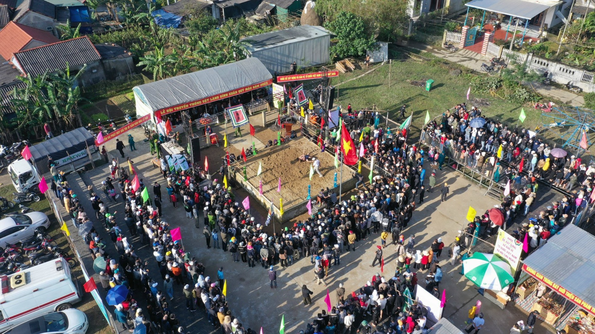

🤼Hội vật làng Sình
📍 Địa điểm: Làng Sình, xã Phú Mậu, huyện Phú Vang, Thừa Thiên Huế
🕒 Thời gian: Mùng 10 tháng Giêng âm lịch hằng năm
🎫 Giá vé: Miễn phí
📖 Giới thiệu
Hội vật làng Sình là một lễ hội dân gian lâu đời, mang đậm tinh thần thượng võ của người dân Huế. Lễ hội được tổ chức vào dịp đầu năm nhằm cầu mong sức khỏe, bình an và mùa màng thuận lợi.
Các đô vật tham gia thi đấu trong không khí sôi động, thu hút đông đảo người xem. Những trận đấu không chỉ thể hiện sức mạnh mà còn đề cao tinh thần fair-play và truyền thống võ thuật dân tộc.
⚠️ Lưu ý
👟 Mang giày dép tiện di chuyển vì khu vực khá đông
📸 Giữ khoảng cách khi chụp ảnh thi đấu
🚯 Không xả rác tại khu vực lễ hội
🧍 Tuân thủ hướng dẫn của ban tổ chức
🎯 Hoạt động nổi bật
● Thi đấu vật truyền thống
● Nghi lễ khai hội đầu năm
● Giao lưu văn hóa dân gian
📸 Gợi ý tham quan
● Chụp ảnh các trận đấu gay cấn
● Trải nghiệm không khí lễ hội truyền thống
● Kết hợp tham quan làng quê và chợ địa phương